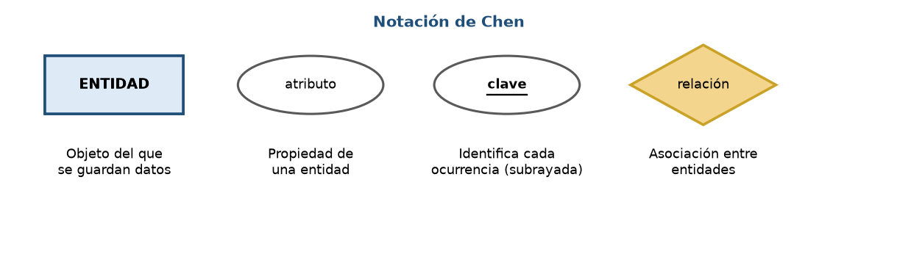
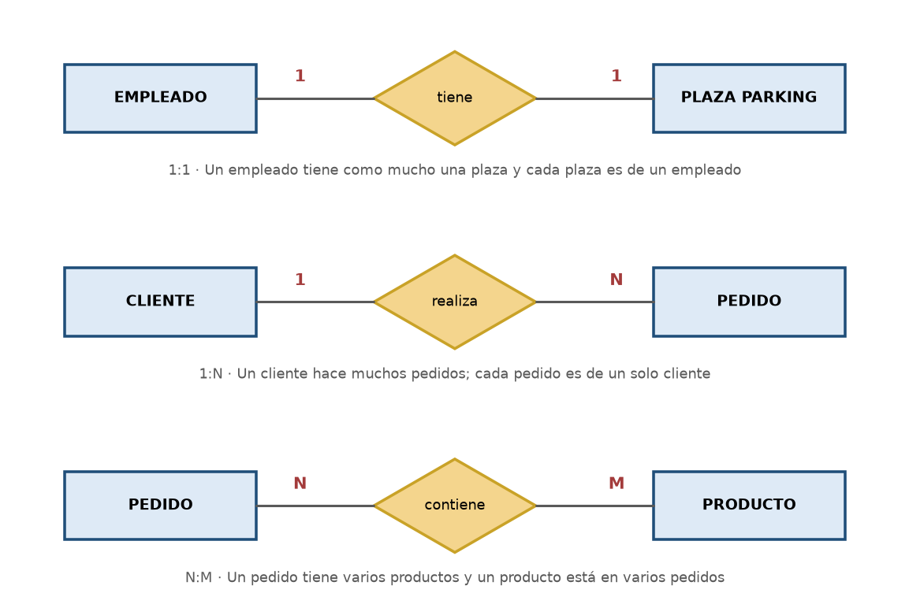
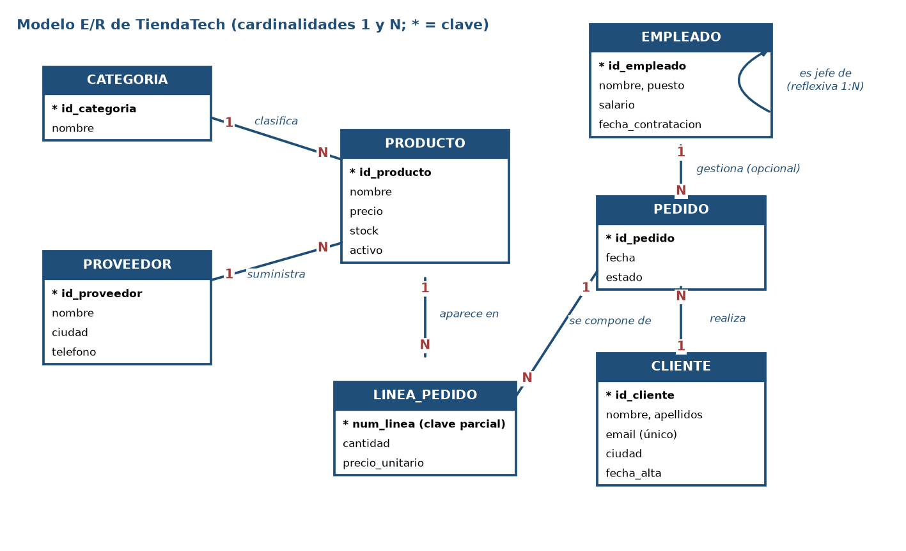
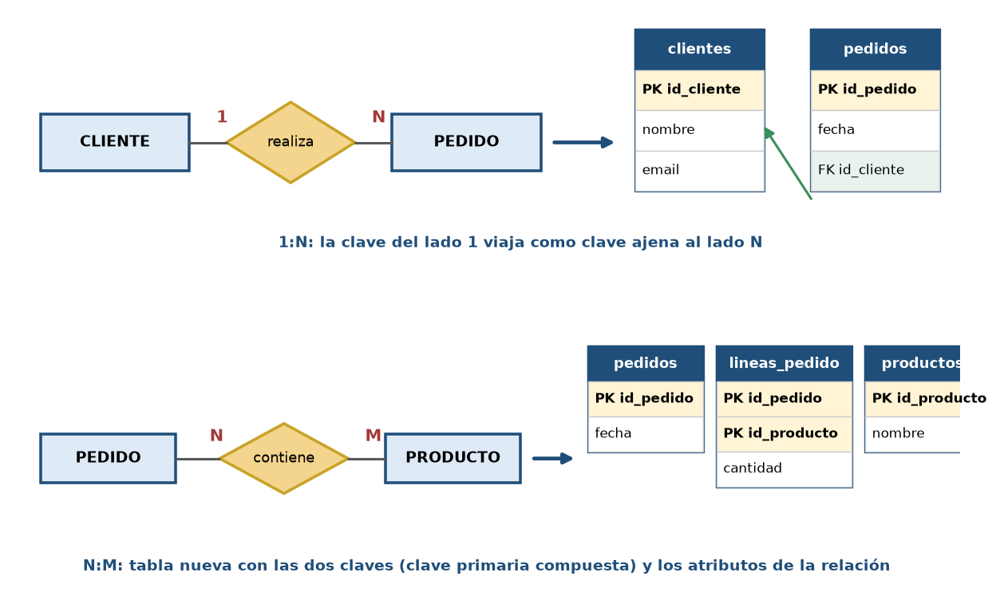
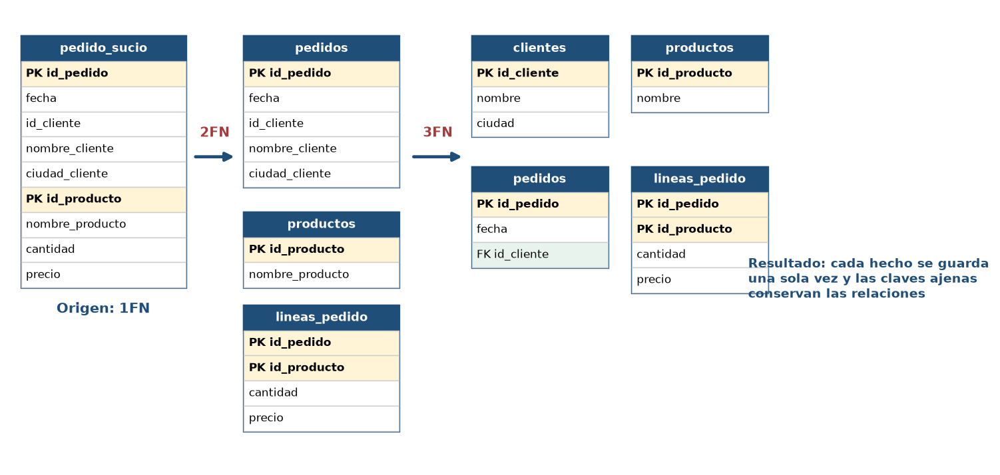

Inicio › UT2
Ver ejercicios de UT2 (ordenados por dificultad)
Qué se trabaja
- Interpretar diagramas entidad-relación: entidades, atributos, cardinalidades, entidades débiles y jerarquías.
- Paso del E-R al modelo relacional: tablas, campos y claves.
- Integridad y normalización (1FN, 2FN, 3FN, BCNF).
Pruébalo en el laboratorio
UT2 · Claves ajenas de una tablaUT2 · Redundancia: ¿cuántas veces se repite una ciudad?
Figuras de la unidad




